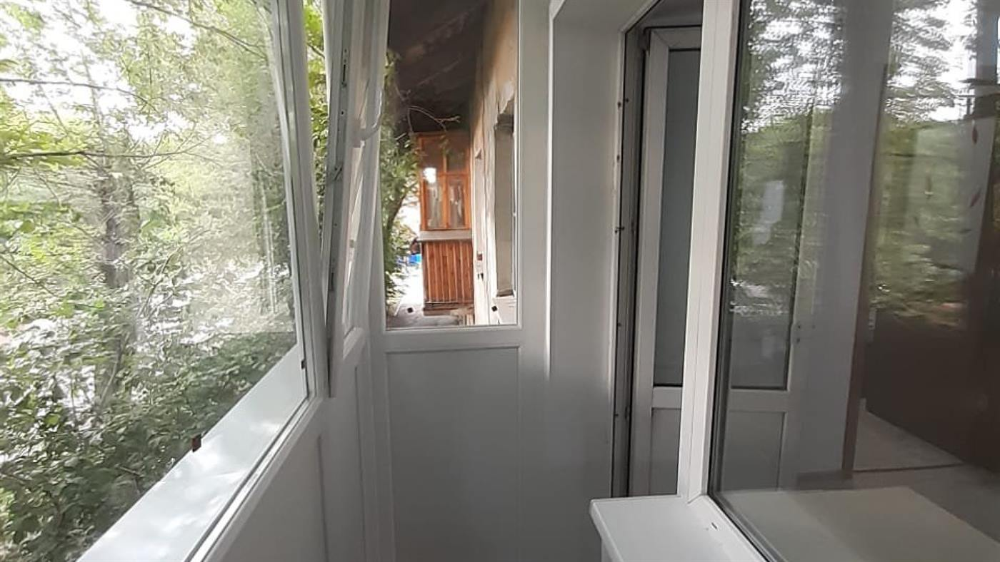
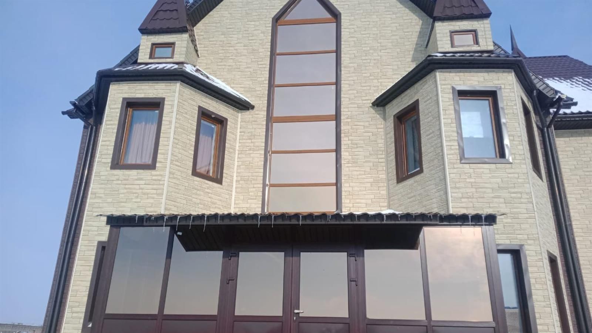
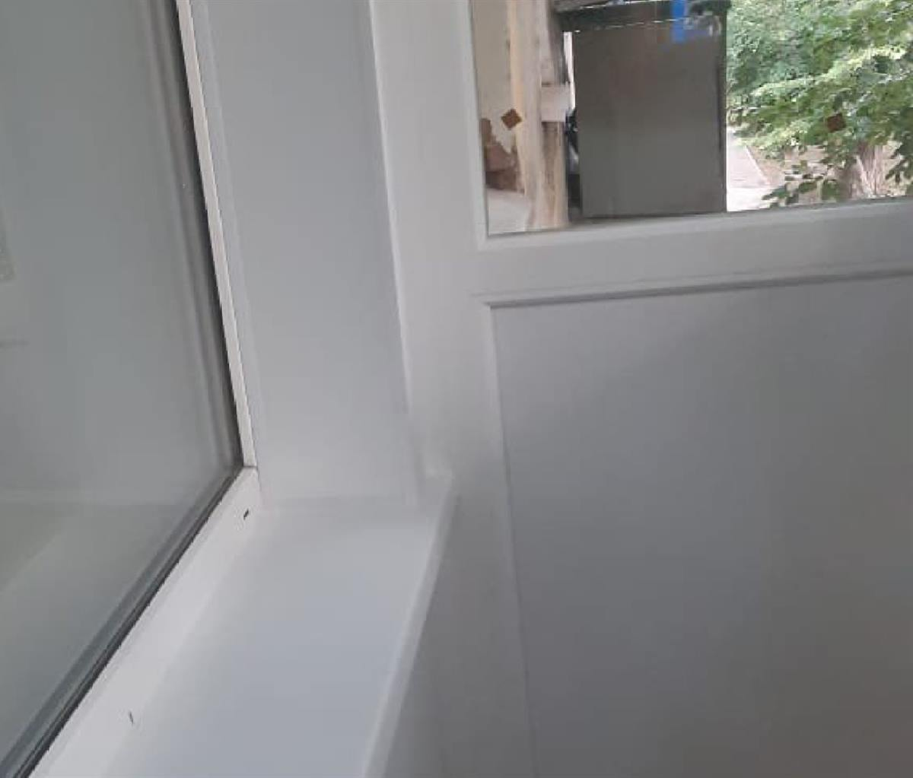
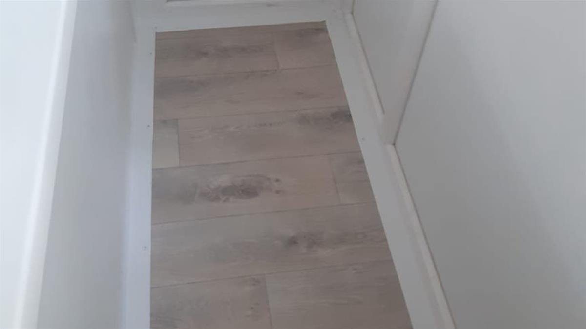

Пластиковые окна
Для квартиры и для частного дома.
торгово-сервисная компания Усть-Каменогорск · три филиала
Пластиковые окна, остекление и отделка балконов, витражи и мозаика, входные двери.
Листайте — окно откроется

Двор, ветер, дерево под окном, пыль с дороги и чужие разговоры.
Тихо. А когда захочется — створка открывается, и лето заходит само.
Всё, что связано со стеклом и проёмом: от окна в квартире до витража и входной двери.
Для квартиры и для частного дома.
Остекление и отделка — от холодного ящика до комнаты.
Цветное стекло в проёме и в двери.
Вход в квартиру и в дом.
Список направлений — из карточки компании в 2GIS. Описания, состав работ и цены впишем с ваших слов: здесь мы ничего не придумывали.
Проём в частном доме больше, форма сложнее, а стекла в нём — на всю стену.

Остекление, обшивка стен, пол. Дальше это уже не «выйти на пять минут», а комната, в которой сидят.


Профиль и створки по проёму — балкон закрывается от ветра и пыли.
Стены и откосы зашиваются, голого бетона больше не видно.
Ровное покрытие вместо холодной плиты.
Все кадры на странице — фотографии компании из карточки 2GIS. Состав и порядок работ уточним у вас.
вносится сразу
4,8
при 97 оценках и 85 отзывах. Источник — 2GIS, значение на день сборки страницы.
08:00
Открываетесь с восьми утра. График по дням уточним и поставим сюда точную таблицу.
Три филиала в городе
49.97656, 82.58816
Точка поставлена по адресу из карточки 2GIS. Её нужно подтвердить, а адреса двух остальных филиалов — добавить: на странице их пока нет.
Открыть на карте